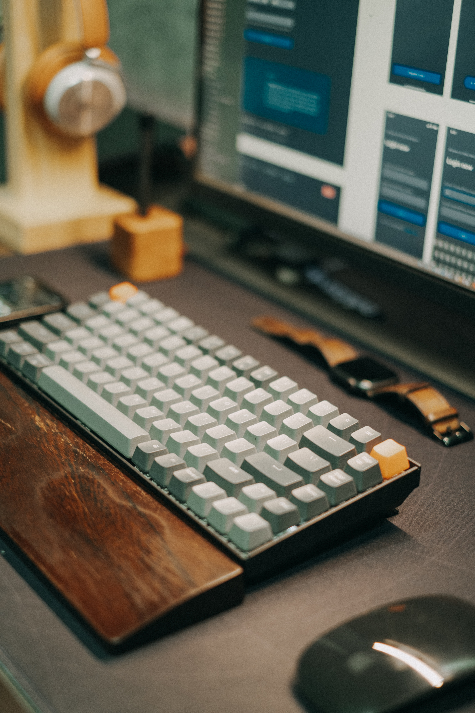

MySQL, Express, React, and Node
KeebCompanion is a personal collection of web applications that serve as useful tools for those in the mechanical keyboard hobby. This collection was created in February 2023 to apply my knowlege of MySQL after completing a course on this language. These applications follow a RESTful design pattern and utilize local MySQL databases.
KeebCompanion consists of two web applications: KeebCollection and KeebTimer. These applications were created after being unable to find tools that completely satisfied my needs in the mechanical keyboard hobby. The remainder of this page covers brief descriptions of the two applications. To learn more about these applications, please visit the GitHub repository linked at the bottom of the page.
KeebCollection is the first tool in the KeebCompanion collection. This tool allows users to store their collection of various mechanical keyboard parts. The tool features the create, read, update, and delete (CRUD) operations while also providing statistics for the items added.
KeebTimer is the second tool in the KeebCompanion collection. This tool is both a timer and a counter that allows users to manage their time spent performing mechanical keyboard related tasks. Users can also store their timer and counter values for each task.
KeebCompanion is a project that I created and developed entirely by myself. Each of the applications follow a RESTful design pattern. Below is a brief explanation of the implementation and technologies used in each of the two tools.
Each of the two tools in KeebCompanion utilize a REST API as a bridge between the user (client) and database (server) sides of the application.
The client side of the applications consists of the user interfaces that are displayed during use. Certain pages on these interfaces display dynamic values that are fetched from a database using the REST API. There are buttons on these interfaces that call the REST API to modify the database as well.
The server side of the applications is a web server that receives the results of the REST API calls. These results are from various POST, GET, PUT, and DELETE HTTP methods that are called for each of the CRUD operations when needed.
More information on these REST APIs can be viewed in the 'index.js' file of the 'server' directories for each the two tools in the KeebCompanion GitHub repository. Here are the links to this file for KeebCollection and KeebTimer.
The two tools use MySQL to store user data and return specific queries for the user to view. Each of the tools automatically create the required database and tables in MySQL during their initializations.
The tables for both of the tools use primary keys to distinguish rows of user data. Additionally, KeebTimer features an second table with a foreign key in order to implement a one-to-many relationship for this application. The queries utilize aggregate and window functions as well as joins to extract specific information on the user data.
Since these MySQL operations are executed by the REST API, information on the MySQL database schemas and queries can also be seen in the 'index.js' file of the 'server' directories for each the two tools in the KeebCompanion GitHub repository.
Express is the framework that is used to define each of the requests in the REST APIs of the two tools. In other words, Express is used to create the REST APIs described above for each application.
React is a JavaScript library that is responsible for the user interfaces of each application. All of the pages in both tools are "React arrow function components". These pages utilize the Axios NPM package to send requests to the REST API from the client side. Additionally, React hooks such as useState, useEffect, and useRef are used to dynamically restore previously existing states for certain pages.
More information on these pages can be viewed in the files of the 'client/src/pages' directory for each the two tools in the KeebCompanion GitHub repository. Here are the links to these directories for KeebCollection and KeebTimer.
Node is a runtime environment for executing JavaScript. In other words, Node serves as the foundation for all backend logic in the applications. This includes the REST APIs created by Express. Additionally, Node is used to install specific packages through the Node Package Manager (NPM). These packages contain functions that are necessary in developing both the client and server sides of the application.